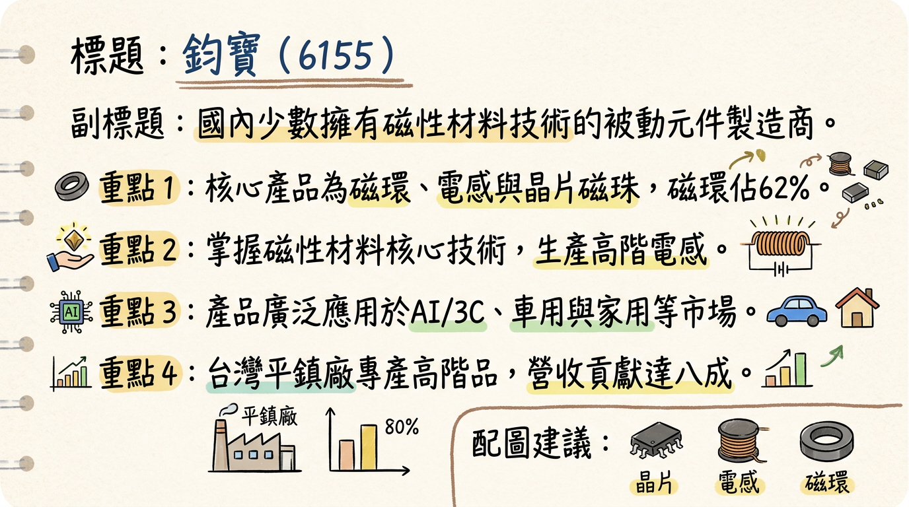
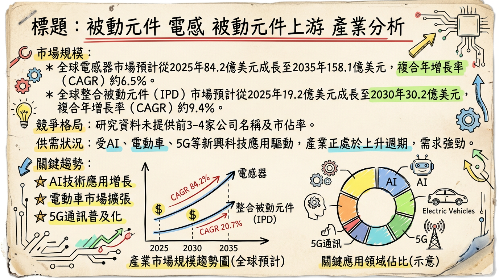
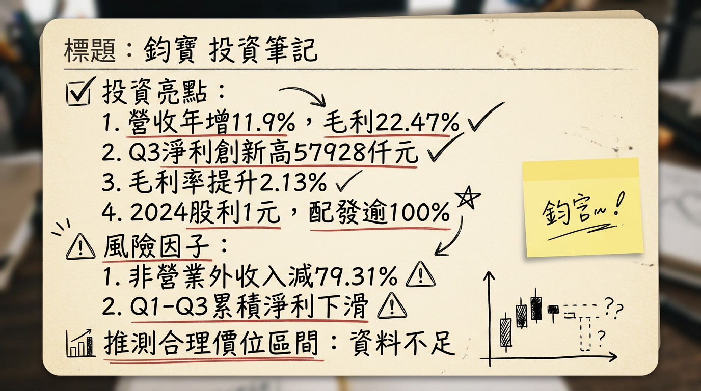

6155 鈞寶 深度研究報告
今天日期：2026年03月06日
一句話摘要
鈞寶（6155）作為國內少數擁有磁性材料技術的被動元件製造商，正乘上AI伺服器、電動車與5G通訊等高成長趨勢的東風。受惠於高階電感與EMI元件需求激增及被動元件漲價潮，公司營收與獲利動能強勁，2026年展望樂觀，預期車用電子與AI相關應用將成為主要成長引擎。
公司概覽
鈞寶（6155）主要從事被動元件及電磁波干擾對策元件的研發與製造，核心產品包括晶片磁珠、電感與線圈，以及鐵氧體吸波材。這些產品廣泛應用於3C產品的電磁波抑制及PCB上的EMI濾波，涵蓋CPU、通訊介面、電源、時脈產生器、儲存裝置等關鍵領域。
產品營收結構 (2025年前十月)
| 產品類別 | 營收佔比 |
|---|
| CORE (磁環及材料) | 62% |
| CHIP (晶片電感及磁珠) | 21% |
| COIL (繞線式電感及抗流線圈) | 11% |
| 應用領域 | 營收佔比 |
|---|
| 車用 | 20% |
| 家用 | 20% |
| AI及3C | 21% |
| IPC | 7% |
| 機械設備 | 10% |
| 其他 | 22% |
鈞寶的生產基地分佈於台灣平鎮與中國蘇州。其中，台灣平鎮廠房的營收佔比約八成，主要負責生產高階產品，並正推動產能擴張計畫，特別是鐵氧體磁芯粉料的產能提升，以強化供應鏈韌性與技術升級。
所屬細分產業與相關題材
鈞寶屬於「電子零組件業」中的被動元件產業。主要題材包括：
- 車用電子：產品廣泛應用於日系、歐系與中系車廠。
- AI伺服器與高頻應用：逐步切入伺服器與高頻應用供應鏈，晶片磁珠與高頻電感在AI伺服器中具技術價值。
- 5G/6G通訊：產品開發藍圖明確聚焦於5G/6G相關應用。
- 智慧家電與工業控制 (IPC)：產品廣泛應用於智慧家電及工業控制領域。
- 電磁干擾 (EMI) 抑制元件：在高頻電感與EMI抑制元件方面，產品接受度與訂單能見度提升。
核心競爭優勢
獨特磁性材料技術：鈞寶是國內少數擁有磁性材料技術的電感製造商，具備晶片磁珠、電感與線圈，以及鐵氧體吸波材的整合能力，提供全面的電磁干擾解決方案。
高成長應用市場深耕：公司產品開發藍圖明確聚焦於車用電子、AI伺服器、5G/6G通訊等高成長領域，並已獲得相關客戶訂單，能直接受惠於產業趨勢。
供應鏈韌性與技術升級：台灣平鎮廠房佔營收八成，主要生產高階產品，並持續擴充鐵氧體磁芯粉料產能，將生產重心轉移至台灣，有助於供應鏈穩定性與技術自主性。
產品價格調整能力：因應上游原料成本上揚，鈞寶已於2026年1月對部分產品進行價格調整，顯示其在成本轉嫁和盈利能力維持上的彈性。
獲利能力顯著回升：在經歷2025年第二季虧損後，2025年第三季稅後淨利強勁反彈至新台幣5,792.8萬元，並帶動前三季營業收入年增11.90%、毛利率提升2.13個百分點，顯示本業營運改善。
財務分析
月營收趨勢 (近6個月)
| 月份 | 金額 (萬元) | 月增率 (MoM) | 年增率 (YoY) |
|---|
| 2026年1月 | 5,960.20 | 5.11% | 15.07% |
| 2025年12月 | 5,670.60 | 14.40% | 21.03% |
| 2025年11月 | 4,956.90 | -0.58% | 0.67% |
| 2025年10月 | 4,985.70 | -18.25% | 2.45% |
| 2025年9月 | 6,098.90 | 21.96% | 9.31% |
| 2025年8月 | 5,000.60 | -5.00% | -11.56% |
- 季營收：新台幣 1.5613 億元
- 毛利率：23.56%
- 營業利益率：2.68%
- 稅後淨利率：18.35%
- EPS：0.33 元
全年度營收與 EPS
- 2024年全年度EPS (實際)：0.97 元
- 2025年全年度營收 (實際)：6.3175 億元
- 2025年全年度EPS (實際)：0.74 元
法說會重點
鈞寶於2025年11月18日召開法人說明會，總經理蔡裕江揭示了關鍵營運數據與展望：
- 營運回升：2025年前三季營業收入年增11.90%，營業毛利年增22.47%，毛利率提升2.13個百分點。第三季稅後淨利達新台幣5,792.8萬元，創報告期內單季新高，彌補上半年虧損，單季EPS 0.66元。
- 產品策略：公司產品開發藍圖明確聚焦於車用電子、5G、AI伺服器等高成長領域，客戶應用族群中車用電子與AI+3C比重增加。
- 產能佈局：台灣平鎮廠正推動產能擴張計畫，特別是鐵氧體磁芯粉料的產能提升，並將生產重心轉移至台灣，以強化供應鏈韌性與技術升級。
- 價格策略：樂見大供應商因應成本上升而調價，鈞寶在新規格上將採用新報價。2026年1月已對部分產品進行價格調整，以反映銀漿等關鍵原料成本上揚。
- 訂單展望：預期日系、歐系客戶（主要來自車用、智能家電、IPC、電機及機械設備）的拉貨動能將延續至2026年。AI伺服器需求的持續升溫也將帶動整體被動元件族群的需求。
- 股東回報：2024年現金股利增加至1.00元，發放比例超過100%。
券商觀點
目前未找到2025-2026年關於鈞寶（6155）的券商報告，因此無法提供至少3家券商的具體目標價、對2025-2026年EPS的預估數字，以及近期有無重大調升/調降評等。
財報深度分析
利潤率趨勢 (2024年Q1 - 2025年Q4)
| 季度 | 毛利率 | 營業利益率 | 稅後淨利率 |
|---|
| 2025年Q4 | 23.56% | 2.68% | 18.35% |
| 2025年Q3 | 23.04% | 2.85% | 35.40% |
| 2025年Q2 | 25.67% | 8.48% | -37.63% |
| 2025年Q1 | 25.56% | 5.69% | 23.69% |
| 2024年Q4 | 23.84% | 3.27% | 5.67% |
| 2024年Q3 | 22.31% | 3.11% | 13.84% |
| 2024年Q2 | 25.71% | 4.50% | 18.73% |
| 2024年Q1 | 19.28% | -6.79% | 22.59% |
：
鈞寶的毛利率在2024年Q1的19.28%觸底後，呈現波動上升趨勢，2025年Q2與Q1達到高點，Q3與Q4則略為回落但仍維持在23%以上，顯示產品組合優化和成本控制的成效。營業利益率在2024年Q1曾為負值，隨後回升，但仍受營業費用影響較大。值得注意的是，2025年Q2稅後淨利率因非營業外收支大幅減少而轉負，顯示業外損益對公司整體獲利影響顯著。然而，2025年Q3與Q4稅後淨利率分別達到35.4%與18.35%，表現強勁，顯示本業獲利能力已顯著改善。
存貨與營運效率
* 2025年Q1：存貨週轉率0.70次
* 2025年Q2：存貨週轉率0.67次
* 2025年Q3：存貨週轉率0.69次 (存貨週轉天數130.4天)
* 2025年Q4：存貨週轉率0.65次 (存貨週轉天數138.19天)
* 分析：2025年存貨週轉率大致維持在0.65-0.70次之間，存貨週轉天數在130-138天，顯示存貨管理相對穩定，但第四季略有增加。目前未有異常堆積或備料現象的具體說明。
* 2025年Q1：應收帳款週轉率0.87次
* 2025年Q2：應收帳款週轉率0.88次
* 2025年Q3：應收帳款週轉率0.99次 (應收帳款收現天數96.07天)
* 2025年Q4：應收帳款週轉率0.87次 (應收帳款收現天數98.94天)
* 分析：應收帳款週轉天數在96-99天之間，第四季略有增加，需留意應收帳款管理效率，以確保現金流穩定。
資本支出與產能
目前未找到2024-2026年鈞寶具體的資本支出金額、趨勢、未來資本支出計畫與預計新增產能的相關資料。但公司在2025年11月的法說會中提及台灣平鎮廠有產能擴張計畫，特別是鐵氧體磁芯粉料產能的提升，且生產重心向台灣轉移。
其他財報重點
* 2025年Q4：24.32%
* 2025年Q3：29.07%
* 2025年Q2：33.68%
* 2025年Q1：28.15%
* 2024年Q4：28.81%
* 分析：負債比率在25%至35%之間波動，維持在相對健康的水平。目前未找到淨負債/EBITDA具體數據。
* 2025年Q3：43.96 百萬元
* 2025年Q2：-96.99 百萬元
* 2025年Q1：9.98 百萬元
* 2024年Q4：31.80 百萬元
* 分析：自由現金流量呈現波動，2025年Q2出現負值，但Q3顯著轉正。每股自由現金流在2025年前9個月累計為-0.26元。公司需持續改善營運活動現金流以支持未來擴張。
* 2025年Q4：佔稅前淨利比86.64%
* 2025年Q3：佔稅前淨利比93.21%
* 2025年Q2：佔稅前淨利比119.17%
* 2025年Q1：佔稅前淨利比80.32%
* 2024年Q4：佔稅前淨利比61.16%
* 分析：業外收支佔稅前淨利比維持在較高水平，顯示業外收益對公司獲利貢獻顯著，尤其在2025年Q2甚至超過稅前淨利。這也解釋了該季度本業獲利佳但稅後淨利轉負的原因，需持續關注業外收支的穩定性。
股權異動
近期董監事/大股東申報轉讓紀錄
- 2026年1月19日：董事郭坤樟申報轉讓40張鈞寶股票予郭勁廷，轉讓方式為贈與。轉讓後持股比率約下降至3.24%。
- 2025年12月22日：董事郭坤樟申報轉讓53張鈞寶股票予郭勁廷，轉讓方式為贈與。轉讓後持股比率下降至約3.29%。
庫藏股、可轉債、增減資紀錄
目前未找到2024-2026年鈞寶庫藏股買回紀錄、發行可轉換公司債(CB)及轉換價格資訊、以及現金增資或減資計畫。
股利政策
- 2025年度：預計發放現金股利0.80元，無股票股利。除息日2025/07/17，現金發放日2025/08/12。
- 2024年度：發放現金股利0.85元，無股票股利。除息日2024/07/03，現金發放日2024/07/23。
產業分析
產業數據
1. 市場規模與CAGR成長率
* 預計從2025年的51億美元成長到2026年的53.8億美元，2026-2035年CAGR為5.41%，預計2035年達86.4億美元。
* 另有報告指出，2025年電感器市場規模為84.2億美元，預計2035年達158.1億美元，2026-2035年CAGR約6.5%。2026年估值為89.1億美元。
* 還有報告預計從2025年的67.45億美元成長到2030年的87.42億美元，CAGR為5.32%。
* 預計從2025年的19.2億美元成長到2026年的21.1億美元，CAGR達9.6%。預計2030年達30.2億美元，CAGR為9.4%。
* 另有報告顯示，2025年市場規模為15.9億美元，預計2035年超過33.7億美元，2026-2035年CAGR超過7.8%。2026年估值為17億美元。
* 全球市場規模於2025年達11.4億美元，預計2026年增至11.8億美元，2035年達16.2億美元，CAGR為3.6% (2025-2035年)。
* 另有報告指出，2024年市場估計為35.37億美元，預計2025年37.29億美元，2035年達63.16億美元，CAGR為5.41% (2025-2035年)。
* 預計從2025年的448.2億美元成長到2026年的476億美元，CAGR為6.2%。預計2030年達478.4億美元，CAGR為5.9%。
* 台灣被動元件產業產值預估2025年約2,559億元新台幣，年增6.4%；預估2026年將達2,767億元新台幣，年增8.1%，再創新高。
2. 供需狀況
從2025年底開始，被動元件核心品類（包括電感、MLCC、電阻）已全面進入漲價通道，呈現供不應求的狀況：
- 常規消費級電感漲幅普遍在5% - 15%，高端/車規級/AI伺服器用電感由於供需極度緊張，漲幅可達20% - 30%，部分稀缺型號甚至更高。
- AI伺服器消耗大量高階被動元件，單台使用量是傳統伺服器的2~3倍，導致高階MLCC需求逆勢爆發，日、韓大廠高階MLCC產能滿載。
- 鉭質電容因AI伺服器需求持續放大且產能難以快速開出，市場恐一路延續賣方優勢至2026年。國巨旗下基美已發出調價函，部分鉭質電容料號將自2026年4月1日起調整價格。
3. 產業的平均毛利率水準
- 電感器產業：中國電感廠商順絡電子毛利率持續維持在30%左右，反映其產品較好的盈利能力和較高的附加值。
- 被動元件產業：車規級被動元件產品具備更高的穩定性、耐高溫性及壽命要求，帶動供應商毛利率提升。
競爭格局
1. 全球主要電感廠商及其市佔率
| 公司名稱 | 國別 | 相關產品 | 市佔率 (2017年) |
|---|
| Murata (村田製作所) | 日本 | 電感、MLCC、磁珠 | 14% |
| TDK | 日本 | 電感、MLCC | 13% |
| Taiyo Yuden (太陽誘電) | 日本 | 電感、MLCC | 13% |
| Sunlord Electronics (順絡電子) | 中國 | 電感、磁珠 | 7% |
| Chilisin (奇力新) | 台灣 | 電感、功率電感 | 7% |
：TDK、Murata、Chilisin (奇力新)、Delta Electronics (台達電)、Taiyo Yuden (太陽誘電)、Samsung Electro-Mechanics (三星電機)、Sunlord Electronics (順絡電子)、Vishay、Sumida、Sagami Elec、Coilcraft, Inc、Panasonic、MinebeaMitsumi lnc.、Shenzhen Microgate Technology、Yageo (國巨)、Laird Technologies、KYOCERA AVX、Bel Fuse、Littelfuse、Würth Elektronik、INPAQ、Zhenhua Fu Electronics、API Delevan、Fenghua Advanced、Ice Components。
2. 鈞寶 vs 主要競爭對手的具體比較
由於缺乏2025-2026年全球大廠與鈞寶在技術、產能、客戶、價格上的直接比較數據，僅能從市場定位推斷：
- 技術：鈞寶在磁性材料技術和EMI解決方案方面具有專業能力，這在高頻、高效能應用中是重要優勢。
- 產能：全球電感市場由日系大廠主導，產能規模通常較大。鈞寶的台灣平鎮廠聚焦高階產品並擴張產能，顯示其正往高端市場發展，有機會在台廠供應鏈中佔據一席之地，受惠於整體被動元件產業的增長。
- 客戶：鈞寶已切入AI、5G、電動車相關領域的客戶群，顯示其產品符合新興應用需求。
- 價格：在被動元件漲價潮中，鈞寶作為供應商，有望透過產品結構優化及市場議價能力提升，改善其價格策略與盈利。
3. 台灣同業比較
鈞寶與奇力新同為台灣電感廠商，同屬被動元件概念股。近年在AI伺服器帶動下，被動元件族群股價表現亮眼。鈞寶股價在2025年11月14日曾波段大漲超過70%，並連續飆出漲停板；2026年2月23日與3月4日也受AI伺服器題材加持強攻漲停，顯示市場對其AI相關潛力的高度認可。然而，公開資訊未找到2025-2026年與奇力新等同業在營收規模、毛利率、EPS的最新詳細比較數據。
產業趨勢
1. 影響產業的2-3個關鍵技術趨勢
*
影響：AI伺服器對電力消耗、散熱與雜訊抑制要求極高，需要大量高階、大尺寸、耐高壓的MLCC與電感。單台AI伺服器對被動元件的需求量相較傳統伺服器成長超過
50%，推升高階被動元件需求與價格。
- 電動車 (EV) 與先進駕駛輔助系統 (ADAS) 的普及：
*
影響：一台純電動車的被動元件需求量跳升至
10,000顆以上，遠高於燃油車的1,000-2,000顆。車用級產品對穩定性、耐高溫性及壽命要求極高，帶動供應商毛利率提升。
*
影響：5G連接數量的成長推動整合式被動元件市場成長，對高效能、緊湊型元件需求增加。IoT設備的小型化與高性能需求也驅動對整合式被動元件的需求。
2. 對鈞寶而言的具體機會和威脅
*
AI伺服器與車用電子需求成長：鈞寶主力業務涵蓋AI、5G與電動車，其磁性材料和EMI解決方案在這些高階應用中扮演關鍵角色，直接受惠於產業趨勢，特別是AI伺服器對高階電感和EMI濾波器的需求激增。
* 被動元件漲價潮：市場供需緊張導致被動元件進入漲價通道，高端產品漲幅可觀，鈞寶有望透過產品結構優化和議價能力提升，帶動營收及毛利率增長。
* 技術升級與小型化趨勢：鈞寶在磁性材料技術的專長，使其在高容量、高耐壓、小型化產品方面具競爭優勢。
*
原材料價格波動：電感主要原材料成本佔比高，價格波動可能影響盈利能力。
* 國際競爭加劇：電感產業集中度高，日系大廠仍佔主導，鈞寶需持續研發與成本管理以應對競爭。
* 全球電子產業低速成長風險（非AI領域）：非AI領域的電子產業可能面臨低速成長，對鈞寶非AI相關產品線需求造成影響。
3. 相關投資題材的具體連結
- AI (人工智慧)：鈞寶的晶片磁珠、電感與線圈廣泛應用於CPU、通訊介面、電源等AI伺服器關鍵元件。AI伺服器對被動元件需求是傳統伺服器的數倍，鈞寶已被視為AI伺服器概念股，受惠於AI掀起的剛需狂潮。
- 電動車 (EV)：電動車對被動元件需求量大幅增加，且對車規級產品穩定性、耐高溫性要求極高。鈞寶產品應用於車用領域，受益於電動車市場成長。
- 5G/高效能運算 (HPC)：5G基礎設施擴展與HPC設備普及（如AI PC）需大量被動元件確保訊號完整性、電源穩定性及EMI抑制，鈞寶的EMI解決方案在此應用中具重要價值。
近期催化劑
近期新聞與事件 (近3個月)
*
利多：2025年前三季營收年增
11.90%，毛利率提升
2.13個百分點；產品聚焦車用、5G、AI等高成長領域；台灣平鎮廠產能擴張；2025年Q3淨利達
新台幣5,792.8萬元，創報告期內單季新高；2024年現金股利增至
1.00元，發放比例超過100%。
* 利空：2025年前三季非營業外收入及支出年減79.31%，拖累淨利年減52.84%；「電力與綠能」、「EMI/EMC方案供應商」應用比重顯著下降。
*
利多：總經理表示樂見大供應商調價，鈞寶將採用新報價；日系、歐系客戶在車用、智能家電、IPC等領域拉貨動能成長，預期延續至2026年；新台幣匯率趨穩助2025年Q3轉虧為盈。
- 2025年12月03日：被動元件族群受惠AI伺服器需求
*
利多：鈞寶股價率先攻上漲停鎖死，顯示市場積極追捧；市場預估2025年CSP資本支出年增
58%，2026年再增
31%，AI晶片出貨未來三年高成長，被動元件族群將受惠。
* 營收
4,956.90萬元，月減
0.58%，年增
0.67%。
* 營收
5,670.60萬元，月增
14.4%，年增
21.03%。
- 2026年01月14日：AI伺服器題材加持，股價強攻漲停
*
利多：鈞寶股價強勢漲停報
55.2元，主因AI伺服器需求升溫；2025年12月營收年增
21.03%；技術面多頭排列，外資昨日買超
258張，主力買超
281張，三大法人合計買超
241張。
- 2026年01月21日：被動元件獲利增溫，鈞寶AI動能看增
*
利多：2025年11月歸屬母公司業主淨利
2,210萬元，年增
186.64%，EPS
0.25元；已對部分客戶調漲價格；AI營收占比達
21%，未來聚焦AI伺服器應用。
* 營收
5,960.20萬元，月增
5.11%，年增
15.07%。
- 2026年02月23日：董事會決議股利政策與召開股東會
* 董事會決議配發114年（2025年）年度現金股利每股
0.8元。
- 2026年02月25日：2025年現金股利確認與殖利率資訊
* 2025年現金股利
0.80元，現金股利殖利率
1.58%。
- 2026年03月02日：AI被動元件資金點火，鈞寶漲停解析
*
利多：鈞寶強勢漲停，受台股大盤反彈與AI伺服器需求延伸影響；技術面多頭排列，籌碼面主力近五日買超佔比提升，外資回補。
外資/投信近期買賣超張數 (近3個月摘要)
- 外資：買賣超活動頻繁且波動較大，存在顯著的買入和賣出操作，例如2026年1月15日買超1,782張，1月20日賣超1,635張；近期在2026年3月4日買超384張，但3月5日賣超15張。
- 投信：幾乎沒有買賣超活動，大多數交易日為0張。
- 自營商：買賣超數量相對較小，但也有買進和賣出操作。
⭐ 成長動能時間軸
| 動能類型 | 具體內容 | 時間點 |
|---|
| 擴廠計畫 | 台灣平鎮廠進行產能擴張，主要提升鐵氧體磁芯粉料產能，並將生產重心轉移至台灣，以提升供應鏈韌性與技術升級。 | 2025年11月 |
| 新客戶/市場 | 積極投入車用電子、5G、AI伺服器等高成長潛力市場。 | 2025年11月 |
| 客戶應用族群中，車用電子與AI+3C比重增加。 | 2025年11月 |
| 日系、歐系客戶在車用、智能家電、IPC、電機及機械設備的拉貨動能成長，預期延續至2026年。 | 2025年11月 |
| AI、伺服器及電源客戶的拉貨動能較為積極。 | 2025年10月 |
| 產能擴充 | 台灣平鎮廠有產能擴張計畫，特別是鐵氧體磁芯粉料產能的提升。 (具體投資金額、完工與量產時程未提供) | 2025年11月 |
| 需求面 | 下游需求將受惠於車用電子、5G、AI伺服器等高成長領域的爆發性成長。 | 2025年11月 |
| AI伺服器需求持續升溫，帶動被動元件族群需求，市場預期AI題材將延續，鈞寶受惠產能排擠效應與供不應求格局。 | 2026年1月 |
| 全球CSP資本支出預估2025年年增58%，2026年再增31%，驅動AI晶片出貨量未來三年高成長，帶動被動元件需求。 | 2025年12月 |
2026 展望
主要成長動能
鈞寶2026年的主要成長動能將來自於其在高成長應用領域的深耕：
- AI伺服器需求爆發：AI伺服器對高階被動元件的需求是傳統伺服器的數倍，預計AI晶片出貨在未來三年維持高成長，全球CSP資本支出2026年預計將再增31%，將持續推動鈞寶AI相關產品的訂單與出貨量。公司AI營收占比在2025年已達21%，並將持續聚焦此應用發展。
- 車用電子市場擴張：電動車和先進駕駛輔助系統的普及大幅增加了被動元件用量，且對車規級產品的性能要求更高。日系、歐系客戶在車用領域的拉貨動能預計將延續至2026年。
- 5G/6G通訊與高頻應用：隨著5G基礎設施和高頻設備的擴展，對高效能、緊湊型EMI抑制元件的需求持續增加。
- 價格上漲效應：被動元件市場因供需緊張已全面進入漲價通道，特別是高端產品漲幅可觀，鈞寶已於2026年1月調漲部分產品價格，有助於營收與毛利率的提升。
- 產能擴張與生產重心轉移：台灣平鎮廠的鐵氧體磁芯粉料產能提升計畫與生產重心轉移，將為未來成長提供更穩固的供應鏈基礎與技術優勢。
風險因子
- 非營業項目波動：2025年前三季非營業外收入及支出大幅減少79.31%，顯示業外損益對公司整體獲利影響顯著。若此非經常性因素未能釐清或持續發生，將對未來獲利造成不確定性。
- 市場競爭與策略調整：「電力與綠能」以及「EMI/EMC方案供應商」的應用比重顯著下降，可能反映市場競爭加劇或策略性調整，需持續觀察其影響。
- 股利政策可持續性：2024年股利發放率超過100%，在獲利波動下，可能引起市場對其可持續性的疑慮。
- 全球電子產業低速成長風險：儘管AI需求獨強，但全球電子產業（非AI伺服器領域）可能面臨低速成長局面，這可能對鈞寶在非AI相關產品線的需求造成影響。
- 原材料價格波動：關鍵原材料如銀漿等成本上揚，若未能有效轉嫁，將侵蝕毛利率。
- 匯率波動與地緣政治：儘管總經理表示新台幣匯率趨穩，但全球政經環境仍充滿不確定因素，可能對海外業務與獲利產生影響。
投資結論
綜合以上分析，鈞寶（6155）在2026年展現出強勁的成長潛力，主要基於以下幾點：
受惠於AI與電動車雙重紅利：鈞寶憑藉其在磁性材料和EMI解決方案的技術優勢，已成功切入AI伺服器與車用電子等高成長應用領域，這兩大趨勢將為公司帶來長期且穩定的需求增長。特別是AI伺服器對被動元件用量的倍增，將是其未來營收爆發的關鍵動能。
被動元件漲價潮推升獲利：隨著高階被動元件市場供不應求，產品價格已進入上漲通道，鈞寶在2026年1月已進行價格調整。這將直接改善公司的營收和毛利率結構，進一步提升盈利能力。
營運體質改善，獲利能力顯著回升：經歷2025年Q2的業外衝擊後，公司本業營運在2025年Q3與Q4表現亮眼，毛利率維持高檔，顯示其產品競爭力與營運效率持續提升，為2026年的成長奠定堅實基礎。
台灣產能佈局強化供應鏈韌性：台灣平鎮廠聚焦高階產品並持續擴張鐵氧體磁芯粉料產能，有助於提升供應鏈的穩定性與技術自主性，降低地緣政治風險，並能更好地服務高端客戶。
儘管目前缺乏券商對鈞寶2026年具體的EPS預估，但鑒於AI伺服器、電動車等新興應用的強勁增長趨勢，以及被動元件漲價潮帶來的獲利動能，我們預期鈞寶的營收和獲利能力有望在2026年持續向上。考慮到市場對AI概念股的高度評價，以及鈞寶近年股價波動區間與近期受AI題材推動的表現（如2026年1月14日曾達55.2元），若公司成長動能如預期發展且業外損益趨於穩定，我們認為鈞寶的股價具備進一步上攻的潛力。
投資建議：基於鈞寶在高成長產業的佈局、被動元件漲價趨勢帶來的獲利改善，以及穩健的營運體質，建議投資人可持續關注。若其AI及車用產品出貨量持續放量，且毛利率能因產品組合優化和漲價效應而提升，預期合理目標價區間有機會挑戰
新台幣 60 元至 70 元。然而，需密切關注非營業損益的穩定性以及原材料成本波動對毛利率的影響。
本報告由 AI 自動產生，資料來源為公開網路資訊，僅供參考，不構成投資建議。產生時間：2026-03-06 14:22
📊 資訊卡


